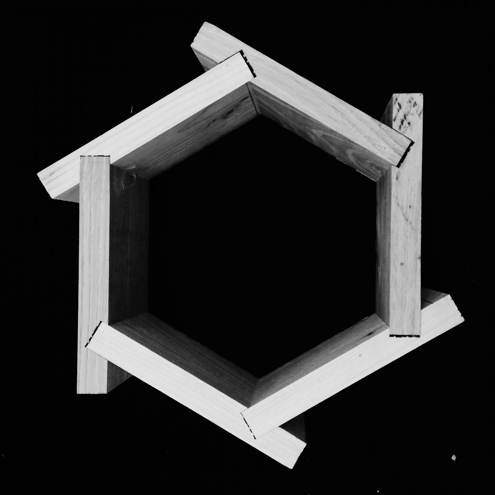
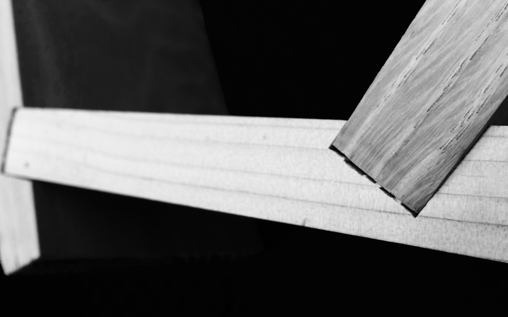

Span
Partnered with another student and tasked to balance strength, function, and delight in order to create a 48" wooden span between two 5x8x16" supports. Though digital models, hand sketching, and other exploration we investigated different spans and finally decided on a hexagon with optimized two and three piece joints would provide just the right amount of strength and a clean look that we were reaching for without engineering a basic bridge like structure.
The first two images depict one of our earlier half scale concept models. We later changed the orientation and found a joint which worked so that we would not need to use any glue at all.

The final prototype of the joint and single module which varies depending on the position in the span. This project is currently being carried to full completion by the end of March.
 
This shows one module which would vary depending on the position in the span.